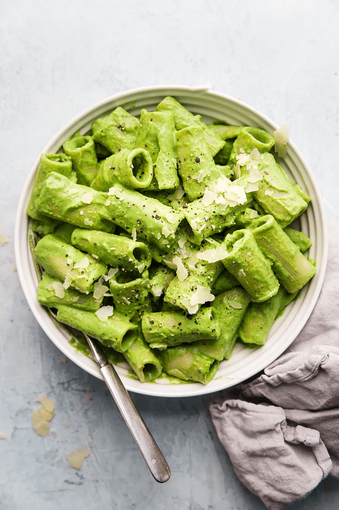

Enjoy Your Meal

Broccoli Pesto Pasta
Ingredients:
- Broccoli florets
- Fresh basil
- Fresh garlic
- Pine nuts
- Extra virgin olive oil
- parmigiano-reggiano
Directions:
Step 1: Bring a big pot of salted water to a boil.
Step 2: While the pasta cooks, make the pesto! Blend the broccoli, basil, garlic, pine nuts, extra virgin olive oil, salt and parmigiano reggiano until it’s nice and smooth.
Step 3: When the pasta is done, scoop out a cup of that liquid gold (aka pasta water) and add it slowly to the pesto as you blend it a bit more. Toss the pasta with the broccoli pesto and dig in!